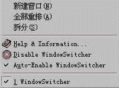

微软的Office97好不好？好！问题多不多？多！举个小小的例子：在Word97中编辑一篇文档的同时，需要经常打开另外多篇文档做同步对照。通常的方法是选取菜单上的“窗口”－“文档”进行切换，次数一多，难免让人感到麻烦不堪，如果能像应用程序一样可以使用Windows的标准热键Alt－Tab进行切换，那就太方便了。这样一个小小的功能,微软或许不屑去做，而WindowSwitcher却可以帮你做到这一点。
软件安装非常简单，在安装过程中，WindowSwitcher会询问是否在每次启动Office软件(以下以Word97为例)时就自动运行，建议选择“是”。安装完成后，在Word的“窗口”菜单下多出如下选项（如图）：
1. Help＆Information帮助及版权信息。
2. Disable WindowsSwitcher是否禁用WindowsSwitcher。
3. Auto－Enable WindowSwitcher是否在启动时就加载WindowsSwitcher。
启用WindowsSwitcher之后你会发现编辑多篇文档时，只需按下Alt－Tab 就可轻易实现文档间的切换,在“开始”工具栏上也由先前的一个文件栏而变为多个文件栏,同样也可用鼠标直接点取进行切换。
WindowsSwitcher不仅适用于Word，同样适用于PowerPoint和Excel，有了它的帮忙，编辑文档无疑会变得更加得心应手。该软件只有1.77兆，而且还是一个FreeWare( 免费软件)，可在www.wopr.com处下载或从《电脑报配套光盘》1999年春节特刊中获得。
(浙江 卢 巍) |